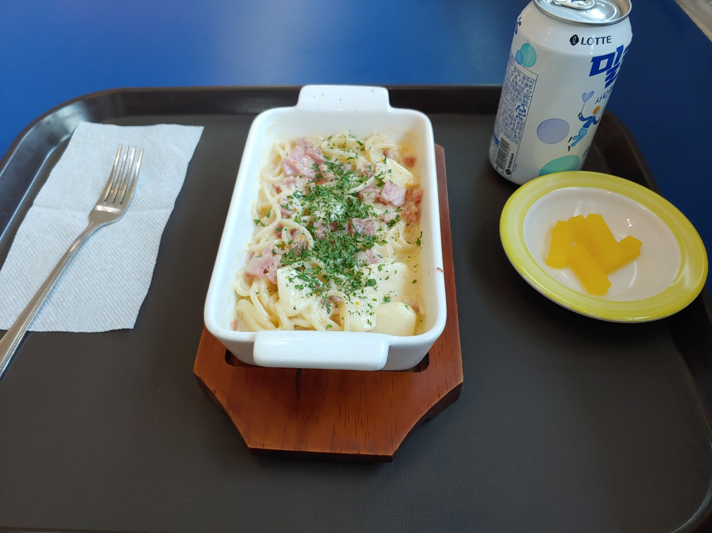

2024/03/19
Tuesday
Today's Food
My Favorite Dish, Carbonara

Carbonara (Italian: [karboˈnaːra]) is a pasta dish made with eggs, hard cheese, fatty cured pork, and black pepper. The dish took its modern form and name in the middle of the 20th century.
The cheese is usually pecorino romano. Some variations use Parmesan, Grana Padano, or a combination of cheeses. Spaghetti is the most common pasta, but rigatoni or bucatini are also used. While guanciale, a cured pork jowl, is traditional, some variations use pancetta, and lardons of smoked bacon are a common substitute outside Italy.
What you need for Carbonara
100g pancetta
50g pecorino cheese
50g parmesan
3 large eggs
350g spaghetti
2 plump garlic cloves, peeled and left whole
50g unsalted butter
sea salt and freshly ground black pepper